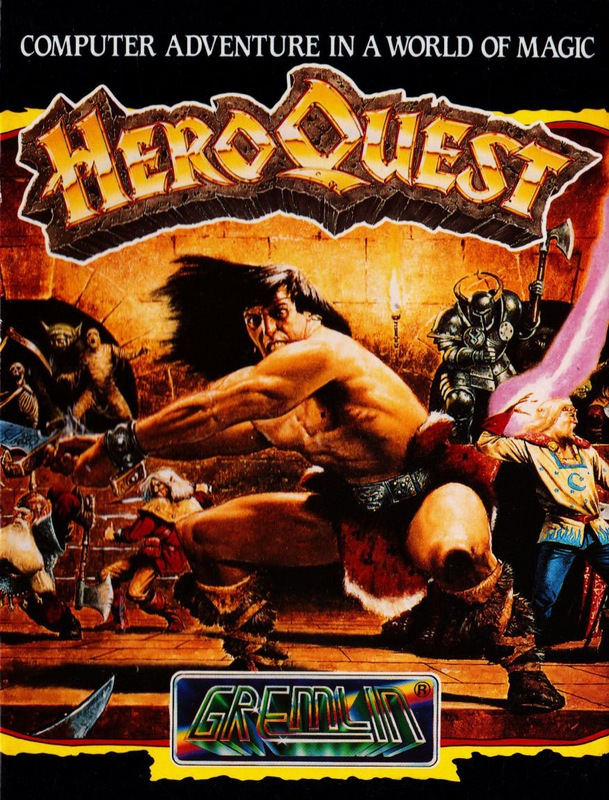
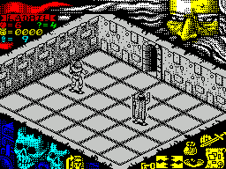

Heroquest


{kind=link}

| Publisher: | Gremlin |
| Price: | £10.99 — £14.99 |
| Year: | 1991 |
| Source: | CRASH, Issue 87 |

Four brave warriors ready to encounter high adventure in a world of magic — that’s HeroQuest! Gremlin’s adaptation of the top-selling board game is here and I’ve signed up to become a hero (a bit of a change from a Speccy reviewer, I know, but you’ve gotta take what you can get these days).
Who shall I be? I can take my pick from a Barbarian (strong but not much cop at magic), a warrior Dwarf (good with weapons but not magical), an Elf (slightly magic and reasonably strong) or a Wizard (good at magic and a bit naff at scrapping). You can control one character, all four, or invite a few chums around and let them join in.

a couple of battles looming!
HeroQuest has 14 different adventure quests, each one more difficult than the last, which can be played in any order. Quests are played in sets of rooms and have up to 22 locations, and all but the very first (The Maze) are taken from the board game. A brief run-down of your objectives are given but then you’re on your own.
Locations are displayed in isometric 3D, furniture and ghoulish characters shown with detailed graphics. There’s no scrolling but a flip-screen technique is used as you move between locations. The whole game is played with a cursor which you move around the screen and use to highlight and select options.
Control of your character and his actions is achieved using a set of icons at the bottom right-hand of the screen. There are four directional pointers, and Fight, Map, Inventory, Search and Key icons.
Players take it in turns to make a move, which always begins, with a roll of the dice, or in this case, by stopping the rapidly changing numbers at the top of the screen. Say, for example, it stops on seven. You can then move the character currently in play seven squares, as marked on the floor. You can also engage in combat or search the room for hidden traps, doors or treasure.
Each aspiring hero has a turn then it’s Morcar’s go. Who’s Morcar? Only the spookiest dungeon master of them all! He controls the evil goblins, orcs, fimirs, skeletons, zombies, mummies, gargoyles and chaos warriors that are your sworn enemies. Should you enter or be in a room when one or a collection of his devilish minions are there, he always attacks!
The battles themselves aren’t shown on-screen. Instead, the display switches to a results table, which shows a picture of your character either being slashed to bits or defending himself. If an opponent scores a hit, one of your body points is lost. Lose them all and your character is out of the game.
You can retaliate when it’s your turn. Select the Combat option and choose a weapon (if you have any). A map of the playing area is displayed; move the pointer to highlight your target and hope for the best. Check the results table to see what state the fight has left you and your adversary in.
The Map icon is really useful: it shows a complete map of the playing area and adds details to it as you discover objects and foes in the corridors and rooms.
The rooms hide many secrets: potions which restore your body points, treasure which can buy you additional and stronger weapons at the end of the quest. However, there are also many unfortunate traps and unseen enemies which may spring up and knock you down.
HeroQuest is like a really good adventure game made even better with the use of great graphics and animation, bringing the whole thing to life. It’s to be played as an adventure game, not an arcade action game, so don’t expect to wander in, beat up a few demons and scarper. You need to plan, to map, to think out strategies and develop attack tactics to complete each quest.
Where HeroQuest’s gameplay really wins over other 3D games is the amount of surprises the quests hold — like the secret doors, treasure and opponents which appear from nowhere!
The ability to involve four players in one game is great fun; the quests aren’t just strategic exploration exercises but include race elements as you all attempt to complete the objective first. The only snag for fans of the board game is that the quests are identical to the original game’s, so you can cheat really easily by looking at its quest book.
It’s a really engrossing game and it’ll be a long time before I get through the many varied quests — but I can’t wait to get stuck into the tougher ones! In fact, I’m off to play some more now — see you in about five months’ time, folks. Byeeeee!
RICHARD — 92%
At last! I don’t need to spend ages with plastic figures setting up the board game! I can just play! As up to four people can take part, a touch of friendly rivalry is added to the proceedings. The playing area’s certainly big, and the surprises are many, while the icon system is simplicity itself to use. This control method does mean that battles are decided by the computer rather than your joystick skills, but doesn’t spoil gameplay. I hope the success of HeroQuest ensures that more roleplaying board games are converted to the Speccy. (Just as well, really — Gremlin are releasing Space Crusade later this year! — Ed).
MARK — 94%
RATING
Lots and lots to do and see — a game that entertains for ages!
| Presentation: | 80% |
| Graphics: | 92% |
| Sound: | 80% |
| Playability: | 92% |
| Addictivity: | 93% |
| Overall: | 93% |